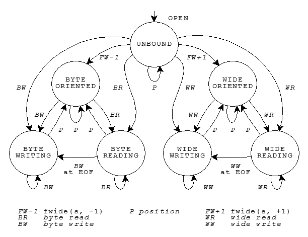

Text and Binary Streams · Byte and Wide Streams · Controlling Streams · Stream States
A program communicates with the target environment by reading and writing files (ordered sequences of bytes). A file can be, for example, a data set that you can read and write repeatedly (such as a disk file), a stream of bytes generated by a program (such as a pipeline), or a stream of bytes received from or sent to a peripheral device (such as the keyboard or display). The latter two are interactive files. Files are typically the principal means by which to interact with a program.
You manipulate all these kinds of files in much the same way -- by calling library functions. You
include the standard header <stdio.h> to declare most of these functions.
Before you can perform many of the operations on a file, the file must be opened. Opening a file associates it with a stream, a data
structure within the Standard C library that glosses over many differences among files of various kinds.
The library maintains the state of each stream in an object of type FILE.
The target environment opens three files prior to program
startup. You can open a file by calling the library function fopen with two arguments. The first argument is a filename, a multibyte string
that the target environment uses to identify which file you want to read or write. The second argument is a
C string that specifies:
Once the file is successfully opened, you can then determine whether the stream is byte oriented (a byte stream) or wide oriented (a wide stream). Wide-oriented streams
are supported only with Amendment 1. A stream is initially
unbound. Calling certain functions to operate on the stream makes it
byte oriented, while certain other functions make it wide oriented. Once established, a stream maintains
its orientation until it is closed by a call to fclose or
freopen.
A text stream consists of one or more lines of text that can be written to a text-oriented display so that they can be read.
When reading from a text stream, the program reads an NL (newline) at the end of each
line. When writing to a text stream, the program writes an NL to signal the end of a
line. To match differing conventions among target environments for representing text in files, the library
functions can alter the number and representations of characters transmitted between the program and a text
stream.
Thus, positioning within a text stream is limited. You can obtain the current file-position indicator by calling fgetpos or ftell. You can
position a text stream at a position obtained this way, or at the beginning or end of the stream, by
calling fsetpos or fseek. Any other change of position might well be not supported.
For maximum portability, the program should not write:
space characters at the end of a lineNL at the end of a file)NL, and HT
(horizontal tab)If you follow these rules, the sequence of characters you read from a text stream (either as byte or multibyte characters) will match the sequence of characters you wrote to the text stream when you created the file. Otherwise, the library functions can remove a file you create if the file is empty when you close it. Or they can alter or delete characters you write to the file.
A binary stream consists of one or more bytes of arbitrary information. You can write the value stored in an arbitrary object to a (byte-oriented) binary stream and read exactly what was stored in the object when you wrote it. The library functions do not alter the bytes you transmit between the program and a binary stream. They can, however, append an arbitrary number of null bytes to the file that you write with a binary stream. The program must deal with these additional null bytes at the end of any binary stream.
Thus, positioning within a binary stream is well defined, except for positioning relative to the end of
the stream. You can obtain and alter the current file-position
indicator the same as for a text stream. Moreover, the offsets used by
ftell and fseek
count bytes from the beginning of the stream (which is byte zero), so integer arithmetic on these offsets
yields predictable results.
A byte stream treats a file as a sequence of bytes. Within the program, the stream looks like the same sequence of bytes, except for the possible alterations described above.
By contrast, a wide stream treats a file as a sequence of generalized multibyte characters, which can have a broad range
of encoding rules. (Text and binary files are still read and written as described above.) Within the
program, the stream looks like the corresponding sequence of wide characters. Conversions between the two representations
occur within the Standard C library. The conversion rules can, in principle, be altered by a call to
setlocale that alters the category LC_CTYPE. Each wide stream determines its conversion rules at the
time it becomes wide oriented, and retains these rules even if the category LC_CTYPE subsequently changes.
Positioning within a wide stream suffers the same limitations as for text
streams. Moreover, the file-position indicator may well have
to deal with a state-dependent encoding. Typically,
it includes both a byte offset within the stream and an object of type mbstate_t. Thus, the only reliable way to obtain a file position within a
wide stream is by calling fgetpos, and the only reliable way
to restore a position obtained this way is by calling fsetpos.
fopen returns the address of an object of type FILE. You use this address as the stream argument to
several library functions to perform various operations on an open file. For a byte stream, all input takes
place as if each character is read by calling fgetc, and all
output takes place as if each character is written by calling fputc. For a wide stream (with Amendment 1), all input takes place as if each character is read by
calling fgetwc, and all output takes place as if each
character is written by calling fputwc.
You can close a file by calling fclose, after which the address of the FILE object is invalid.
A FILE object stores the state of a stream, including:
Do not alter any value stored in a FILE object or in a file
buffer that you specify for use with that object. You cannot copy a FILE object and portably use the address of the copy as a
stream argument to a library function.
The valid states, and state transitions, for a stream are shown in the diagram.

Each of the circles denotes a stable state. Each of the lines denotes a transition that can occur as the result of a function call that operates on the stream. Five groups of functions can cause state transitions.
Functions in the first three groups are declared in <stdio.h>:
fgetc, fgets, fread, fscanf, getc, getchar, gets, scanf, ungetc, vfscanf (added
with C99), and vscanf (added
with C99)fprintf, fputc,
fputs, fwrite,
printf, putc,
putchar, puts,
vfprintf, and vprintffflush, fseek, fsetpos, and rewindFunctions in the remaining two groups are declared in <wchar.h>:
fgetwc, fgetws,
fwscanf, getwc,
getwchar, ungetwc, wscanf,
vfwscanf (added with C99),
and vwscanf (added with C99)fwprintf, fputwc,
fputws, putwc,
putwchar, vfwprintf, vwprintf, and wprintf,For the stream s, the call fwide(s, 0) is
always valid and never causes a change of state. Any other call to fwide, or to any of the five groups of functions described above,
causes the state transition shown in the state diagram. If no such transition is shown, the function call
is invalid.
The state diagram shows how to establish the orientation of a stream:
fwide(s, -1), or to a byte read or byte write
function, establishes the stream as byte oriented.fwide(s, 1), or to a wide read or wide write
function, establishes the stream as wide oriented.The state diagram shows that you must call one of the position functions between most write and read operations:
Finally, the state diagram shows that a position operation never decreases the number of valid function calls that can follow.
See also the Table of Contents and the Index.
Copyright © 1992-2010 by P.J. Plauger and Jim Brodie. All rights reserved.